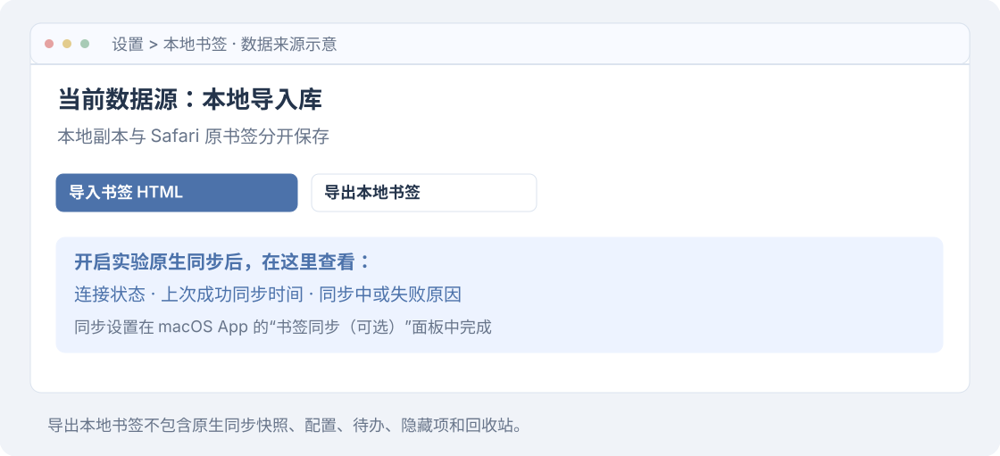

v1.13.2 · 离线文档
本页目录
Safari 自动同步
这是一项可选实验功能，需要 Safari 26。先按安装教程完成安装，只有需要自动读取和删除 Safari 原书签时才开启。
开启自动同步
这是实验功能，默认关闭。 需要 Safari 26，当前不适用于多个 Safari 用户场景。请先使用新建的测试书签验证流程。

- 进入同步面板。 在 macOS App 中选择“书签同步（可选）”，点击“授权辅助功能”。普通本地导入不需要这些权限。
- 授权 App。 在“系统设置 > 隐私与安全性 > 辅助功能”中授权当前 App。可选宿主助手在沙盒外运行以控制 Safari；扩展仍在沙盒中。
- 连接容器。 先启用扩展并打开一次导航台，再在 App 中点“重新连接”。免费测试版使用本扩展的数据容器；若 macOS 询问访问权限，请核对 App 来源后授权。初始化结束、容器可用后才可开启同步。
- 开始同步。 开启“自动导出同步”，把 Safari 浏览器窗口保持在前台。助手会打开原生导出窗口，仅选择书签；系统验证由你在系统窗口完成。
- 核对结果。 在导航台“设置 > 本地书签”查看数据来源、连接状态和“上次成功同步”时间，核对书签内容。
App 记住已开启的同步开关。只关闭助手窗口不会退出监测；使用 App 菜单的“退出书签导航台”可以停止。
新增如何同步
助手每 3 秒观察 Safari 书签文件的修改时间。新增、修改或删除落盘后，等待 Safari 在前台，再通过导出菜单生成归档并读取其中的 HTML。它不直接读取或编辑 Safari 私有书签文件的内容，也不要求完全磁盘访问。
导出可能短暂占用 Safari 界面；同步中不要操作导出窗口。落盘和前台等待可能造成延迟。若无法观察元数据，可主动点击“立即同步”。失败后保留上次成功快照，等待新的书签变更或主动重试，不会不断重复同一次失败。
每次导出都可能要求系统验证
Safari 26.5 的测试中，即使只导出书签，每次也会要求系统密码验证，包括删除前后的复核。这与允许未签名扩展、授予辅助功能是不同步骤，因此不能保证无人值守同步。
助手为每次验证最多等待 30 分钟，页面显示等待状态。密码只在系统窗口输入，助手不读取、保存或代填密码。超时后先完成或取消系统弹窗，再主动重试。
从导航台删除 Safari 书签
- 在书签右键菜单选择真实删除，先确认网页提示。
- 助手重新导出，核对最新快照及唯一名称、网址，再显示宿主确认。
- 确认后由助手在 Safari 原生书签管理界面删除，再次导出复核。
- 回收站保留原网址和目录，需在 Safari 手动重新添加；当前不支持自动还原。
删除会影响 Safari 原书签，可能通过 Safari 的 iCloud 同步影响其他设备。快照变化、重复名称与网址、授权缺失或助手退出时停止操作，不会退回本地库并宣称“Safari 删除成功”。编辑、移动、创建和文件夹删除请在 Safari 中操作。
确认后若系统未切回 Safari，请把 Safari 浏览器窗口切到前台，并关闭 Safari 设置或对话框；助手最多等待 3 分钟。如果提示书签管理页无法打开，先选择“书签 > 编辑书签”，保留该标签页再重试。
若提示“已执行删除但复核未完成”，先检查 Safari、完成同步，不要重复提交删除。失败原因保留在 App 和连接状态中。
同步问题排查
| 遇到的问题 | 这样处理 |
|---|---|
| 同步不开始 | 保持 App 运行，检查辅助功能授权和容器连接，把 Safari 切到前台 |
| 导出一直等待 | 完成或取消系统密码弹窗；超时后再点击“立即同步” |
| 删除目标不能核对 | 检查重复书签和最新同步时间；也可以直接在 Safari 中删除 |
| 更新后提示未授权 | 在辅助功能设置中移除本 App 的旧记录，再添加“应用程序”中的新版 App |